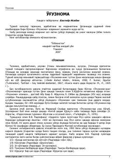

OQadimgi turkiy epos va mifologiyaga oid «O'g'noma» asarining nashri.
Qadimgi turkiy yozma yodgorliklardan biri bo'lgan «O'g'noma» asarining asl matni va uning o'zbek tiliga o'girilgan talqini keltirilgan. Risolada asarning tarixiy ahamiyati, tili va turkiy xalqlar mifologiyasidagi o'rni ilmiy jihatdan tahlil qilingan.